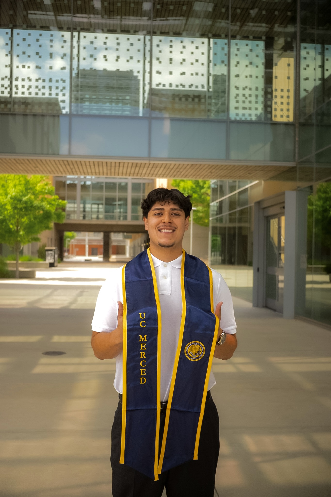

Welcome to my portfolio!
A little about me: I grew up in northern California in a town called Williams and attended UC Merced 22', where I've now graduated in May of 2026. I orginally came in with a focus on Civil Engineering, ultamelty switching majors in Late 2024 to Mechanical Engineering. Since then, I've been able to grow and work on the projects included in this portfolio. I hope you enjoy looking through and of course offer feedback!
Email · LinkedIn · GitHub · Résumé · Portfolio (PDF)